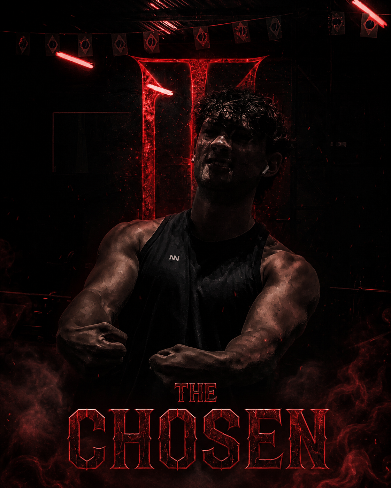
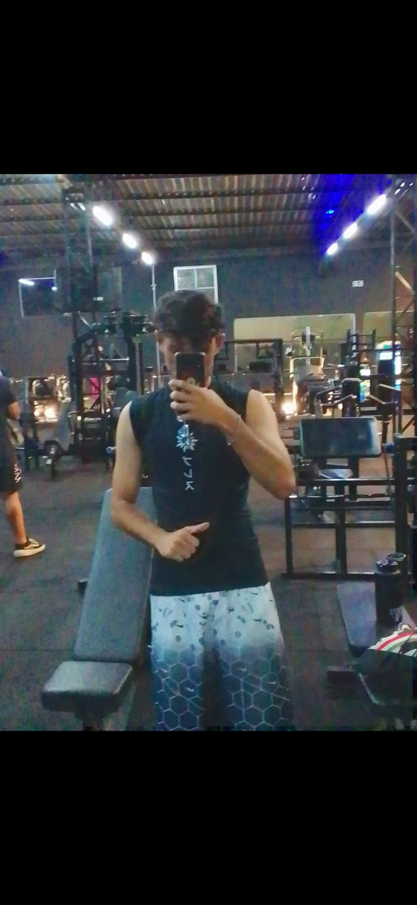
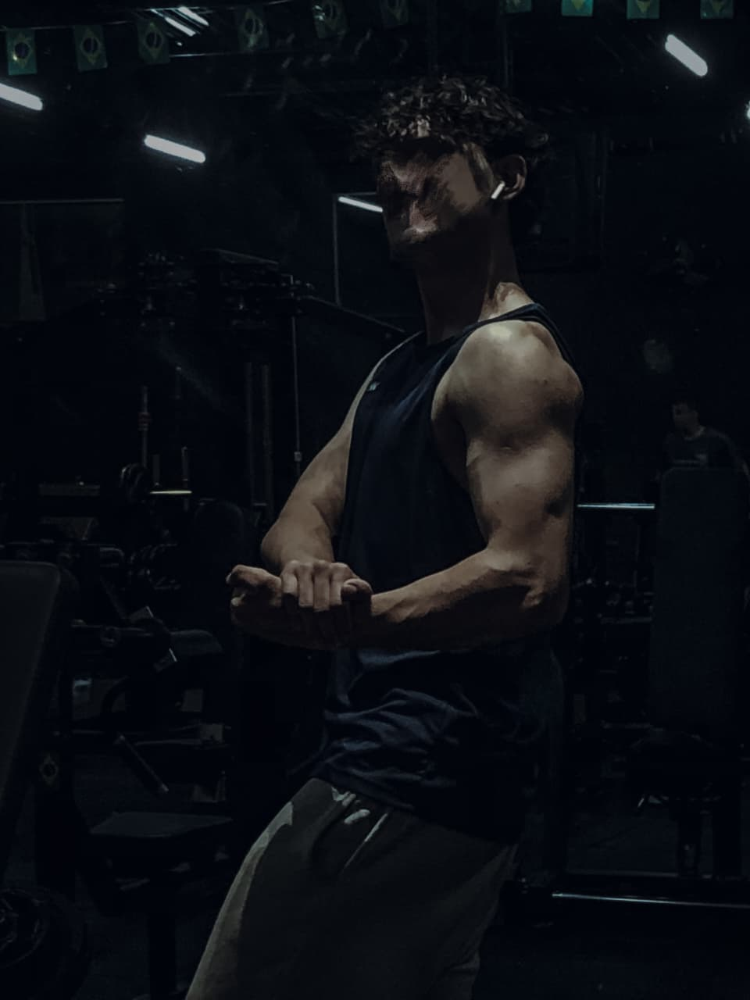

THE CHOSEN
ArthurLang
Ao sem talento,
Obsessão.
Influencer / Futuro atleta
Para você que também quer ter uma evolução tanto física quanto mentalmente, essa página serve para você.
Acompanhar minha evoluçãoEvolução física
Não é só sobre shape. É sobre disciplina, constância e se tornar mais forte todos os dias.
Evolução mental
Uma mente fraca abandona no primeiro desconforto. Uma mente forte entende que evolução exige sacrifício.
SOBRE MIM
Quem é ArthurLang?
Meu nome é Arthur Langame, tenho 18 anos e comecei meus treinos aos 17. Desde então, eu entendi que evolução não vem de sorte, vem de escolha.
Eu não me considero alguém de talento absurdo ou "o cara da genética rara". Mas acredito que a constância, o estudo e a obsessão certa podem vencer muita coisa que parecia impossível.
Essa página não é sobre fingir perfeição. É sobre mostrar o processo real: físico, mente, rotina, erros, ajustes e a busca diária por uma versão mais forte.
Ao sem talento, obsessão.
MANIFESTO
O sem talento não vence por dom. Vence porque não para.
Enquanto alguns esperam motivação, eu escolho construir disciplina. A obsessão pelo progresso não é sobre pressa, é sobre não aceitar continuar sendo a mesma versão todos os dias.
MEUS PILARES
O que sustenta minha evolução
Disciplina
Fazer o que precisa ser feito, mesmo quando a vontade não aparece.
Estudo
Entender treino, execução, dieta e parar de perder tempo errando o básico.
Constância
Não é sobre acertar uma semana. É sobre continuar tempo suficiente para mudar.
Obsessão
A busca silenciosa por uma versão mais forte, mesmo quando ninguém vê.
MINHA EVOLUÇÃO
Do começo até agora

INÍCIO
AGORASeus resultados não vão vir na velocidade da sua ansiedade. Nem todos têm a genética dos sonhos, mas isso não pode virar desculpa. Cabe a você vencer suas limitações, respeitar o tempo do seu corpo e continuar até o esforço se tornar visível.
DICAS
O que eu quero passar
Não comece no escuro
Não entre no processo sem saber o que está fazendo. Estude seu treino, entenda sua execução, aprenda sobre dieta e procure evoluir com inteligência. Conhecimento economiza anos de erro.
O difícil começa fora do treino
Treinar é só uma parte. O mais pesado é manter dieta, sono, rotina e disciplina quando ninguém está vendo. Muitos caem nessa parte. Você precisa ser mais forte que a vontade de desistir.
Tenha calma com o processo
Nem sempre a evolução vem rápido. Seu corpo leva tempo para responder, e seu legado não é construído em uma semana. Continue fazendo o certo, mesmo quando o resultado ainda não apareceu.